How to set up and use the MEAN Stack
A guide, researched and written by Eric Rouse.
The web has run on the LAMP stack for quite some time now. Basic LAMP structure includes a linux machine as the underlying hardware. An apache web server runs on that machine as the support structure. Add to that MySQL and PHP for database and scripting and you get LAMP. And this server architecure has been serving up pages pretty well for years.
- L - Linux
- A - Apache
- M - MySQL
- P - PHP
But innovations of the modern web era like mongoDB, Node.js, Express and AngularJS means that you can create and run a web server without PHP, SQL or apache. Hence, that server stack can run on any machine; linux is not required.
- M - mongoDB (the leading NoSQL database)
- E - Express (flexible Node.js framework)
- A - AngularJS (HTML vocabulary extension)
- N - Node.js (the javascript runtime engine)
The aim of this document is to act as a help and guide for setting up and navigating the MEAN stack of mean.io, and to make it just a little more user friendly.
One note: this is not a comprehensive guide of the technologies mentioned, only a guide to getting the stack started. Follow the links above for some great resources for each of the items.
STEP 1
Install the MEAN stack.
Navigate to mean.io and follow the installation instructions for your system. Basically you need to install the prerequisites, Node.js, MongoDB, Git and Grunt. Then install the mean-cli.
You may need to be logged in as root to install mean-cli; for ubuntu users root is not enabled by default. You'll need to enable root first.
$ su
# npm install -g mean-cli
# exit
$ mean init testApp
$ cd testApp
$ npm install
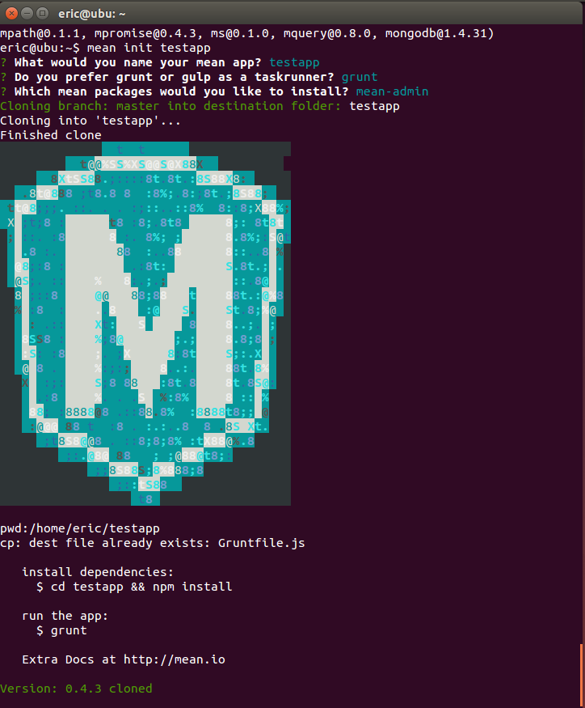
STEP 2
Launch the test application.
The preferred method of launching the server is to use grunt.
$ grunt -f
Now, open your preferred browser and navigate to:
localhost:3000
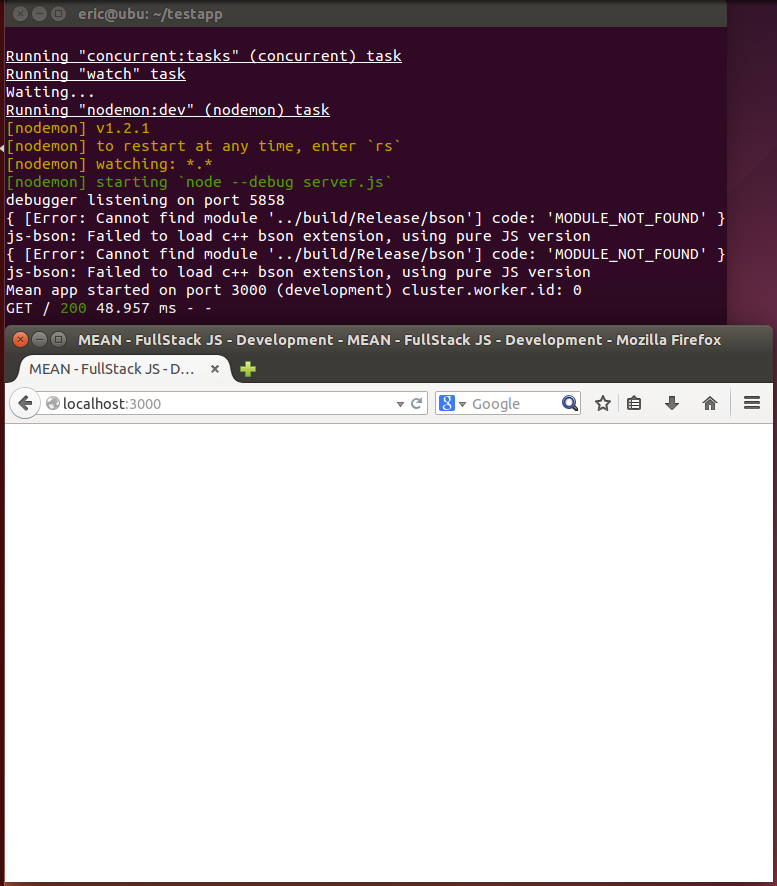
Here is where you'd be a bit stuck without this guide, because the next step is completely non-obvious. Your app is not actually working.
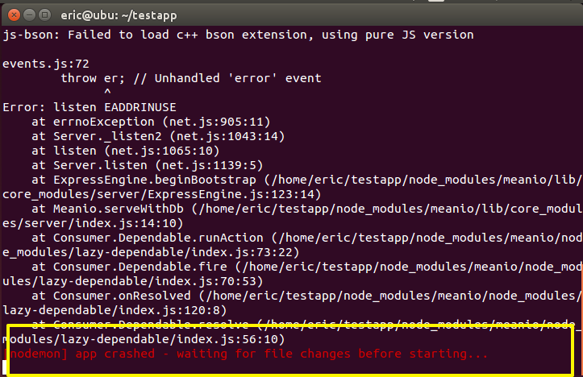STEP 3
Manually install dependancies.
It isn't stated anywhere, but if you use bootstrap or jquery (and the default application does) you'll need to create their folder paths and files manually. Otherwise you'll get an error and nothing will load when you launch your app. Note there is only one GET request:
As opposed to if everything is working:
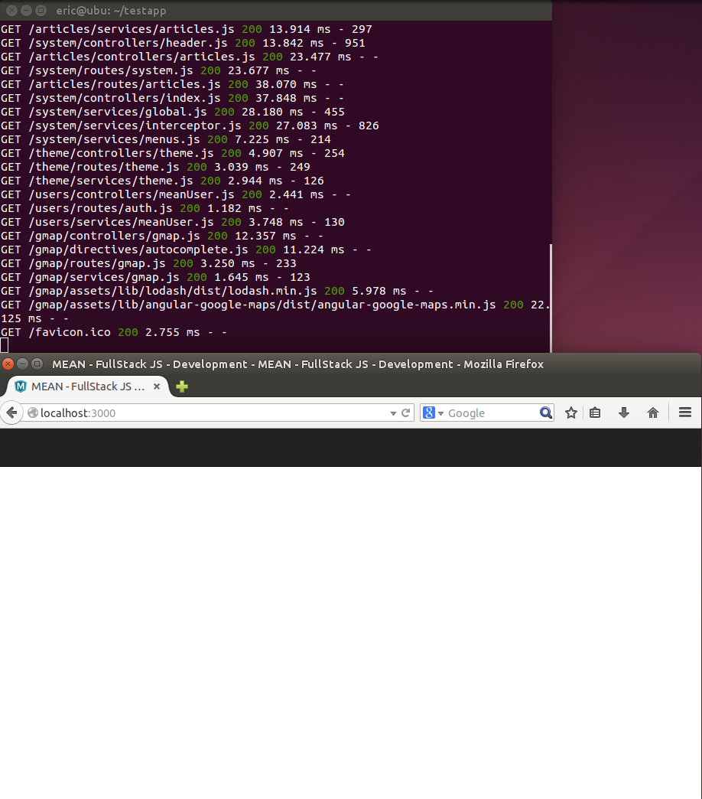First create the jquery directories and file:
~/testapp/bower_components/jquery/dist/jquery.min.map
Now create the bootstrap directory:
~/testapp/bower_components/bootstrap/
Then download bootstrap:
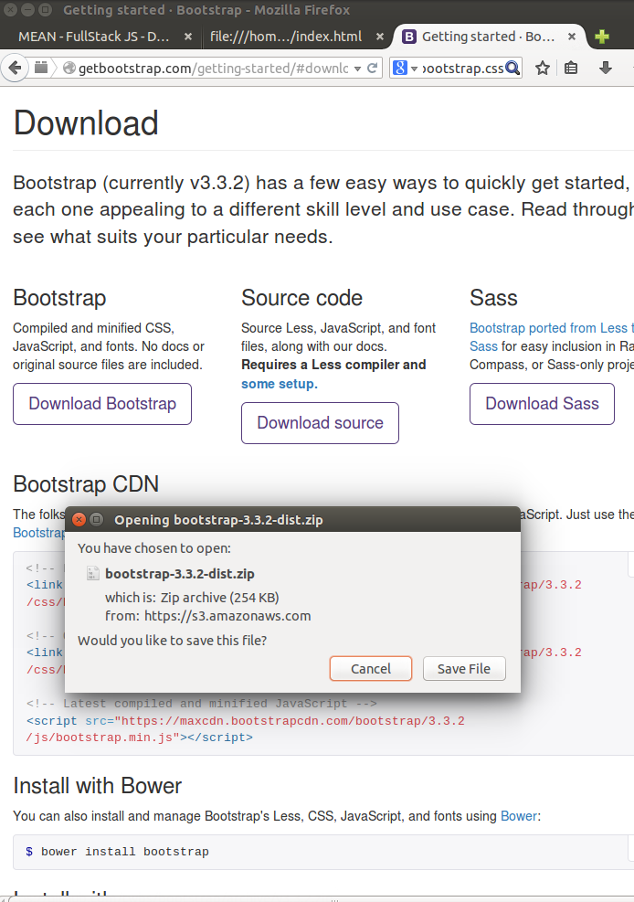Extract the contents of the bootstrap zip folder to the bootstrap directory created above. Rename the bootstrap-*-dist folder to dist. The following paths should now exist:
~/testapp/bower_components/bootstrap/dist/css/
~/testapp/bower_components/bootstrap/dist/fonts/
~/testapp/bower_components/bootstrap/dist/js/
STEP 4
Explore the default application.
So what exactly happened when we used the mean init command on this directory, creating our application? Well, by and large a bunch of files and folders were created.
- bower_components/
Files associated with the package manager of our app. This is where we added bootstrap and jquery information. Other external dependancies would reside here. - config/
Configuration files storage, espcially for express. - node_modules/
All the node modules for our app. - packages/
This directory is of particular interest as here reside the actual packages of our app. - tools/
Storage location for grunt files. - bower.json
Bower dependancy declarations. - Gruntfile.js
Project configuration for grunt. Of note here is the var paths section. It gives us clues as to where and how we need to design our packages so grunt can find them and display their views.var paths = { js: ['*.js', 'test/**/*.js', '!test/coverage/**', '!bower_components/**', 'packages/**/*.js', '!packages/**/node_modules/**', '!packages/contrib/**/*.js', '!packages/contrib/**/node_modules/**'], html: ['packages/**/public/**/views/**', 'packages/**/server/views/**'], css: ['!bower_components/**', 'packages/**/public/**/css/*.css', '!packages/contrib/**/public/**/css/*.css'] }; - karma.conf.js
Debugging configuration. - LICENSE
A copy of the MIT license. - mean.json
MEAN dependancies. - package.json
Full description and dependancies of our application. - Procfile
Process types. - README.md
A markdown version of mean.io. - server.js
Code to run the server instance.
The packages directory merits further discussion as it is the heart of our application. Within this directory are our apps. By default there are four:
- system/
- theme/
- users/
- articles/
Each of these is further subdivided into a public and server folder and four files, app.js, mean.json, package.json and README.md. These extend the files of that same name in the primary application directory.
Inside the public directory are more folders, most notably, "views". Within views we store the html files that make up the front end of our app. The other folders (assets, controllers, routes, services and tests) are pretty self explanatory and we'll go into more detail on some of them in a bit.
For now, let's look in the view folder and edit the index.html file
STEP 5
Learn to browse.
Now that we know a little bit about the default structure and files, lets start trying to interact with the app via a web browser. Make sure your server is still running (grunt -f) and launch:
http://localhost:3000/system/views/
You should see the following:
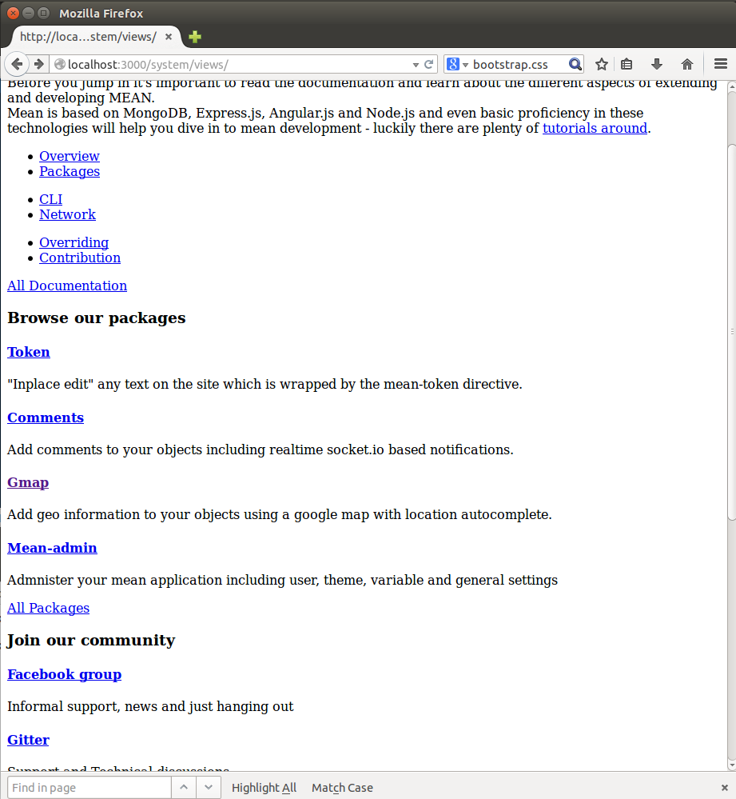Now, add some text to the index.html file in the views folder of the systems package. Save changes and hit refresh in the browser:
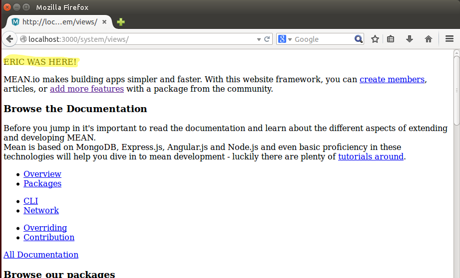Using that structure you can view any of the pages in any of the packages.
http://localhost:3000/*package name*/views/[page.html]
For instance, from the users package, the register page:
http://localhost:3000/users/views/register.html
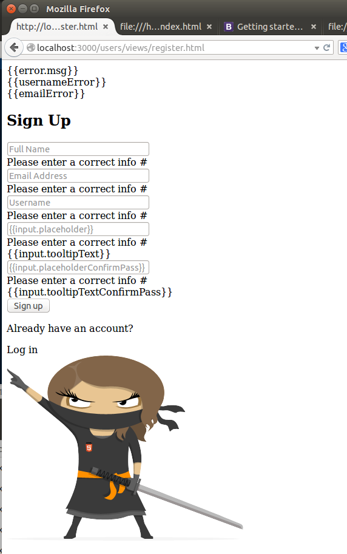
Or, from the articles package, the create page:
http://localhost:3000/articles/views/create.html
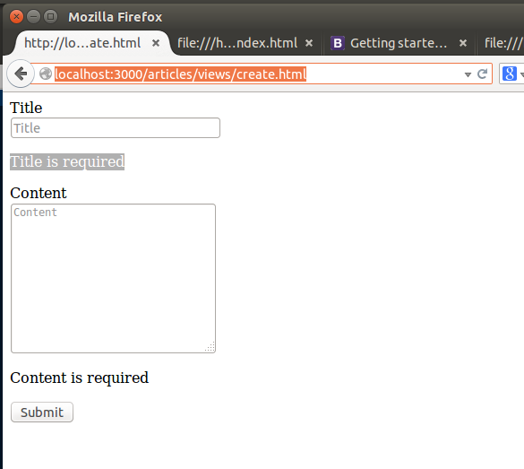
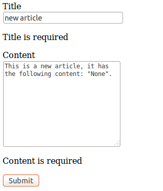
STEP 6
Create a new package from an addon.
So, there is quite a lot to explore of the built-in application, but it's still pretty minimal. Let's install a new package from the list of available addons. I like google maps, so let's play with Gmap.
$ mean install gmap
A new directory has been added to your packages folder called contrib/gmap. Let's browse the new package and see what's been added!
http://localhost:3000/gmap/views
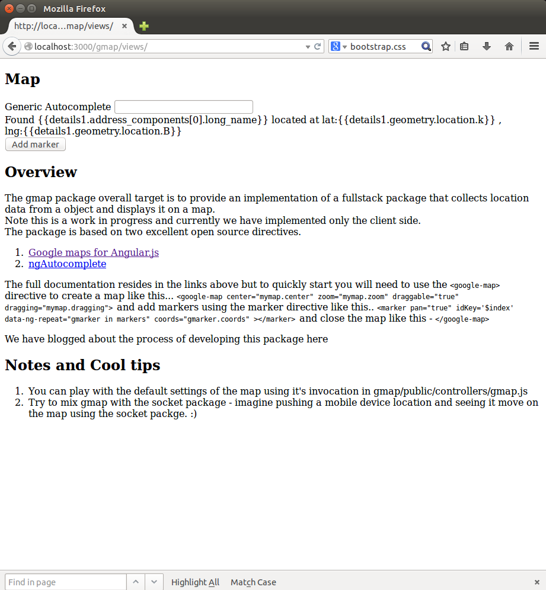
Not much. But, there is a quickstart guide, so let's try that. Create a new file in the views folder called map.html and add the code the page suggested.
<body>
<div data-ng-controller="GmapController">
<tabset>
<tab heading="A Map:">
<h2>Map</h2>
<div class="col-md-4 col-lg-8 example-block alt">
<div class="span3 bs-docs-sidebar">
<div class="angular-google-map-container">
<div id="gmap">
<google-map center="mymap.center" zoom="mymap.zoom" draggable="true" dragging="mymap.dragging">
<marker pan="true" idKey=0 data-ng-repeat="gmarker in markers" coords="gmarker.coords" ></marker>
</google-map>
</div>
</div>
</div>
</div>
</tab>
</tabset>
</div>
</body>
And now browse to it!
http://localhost:3000/gmap/views/map.html
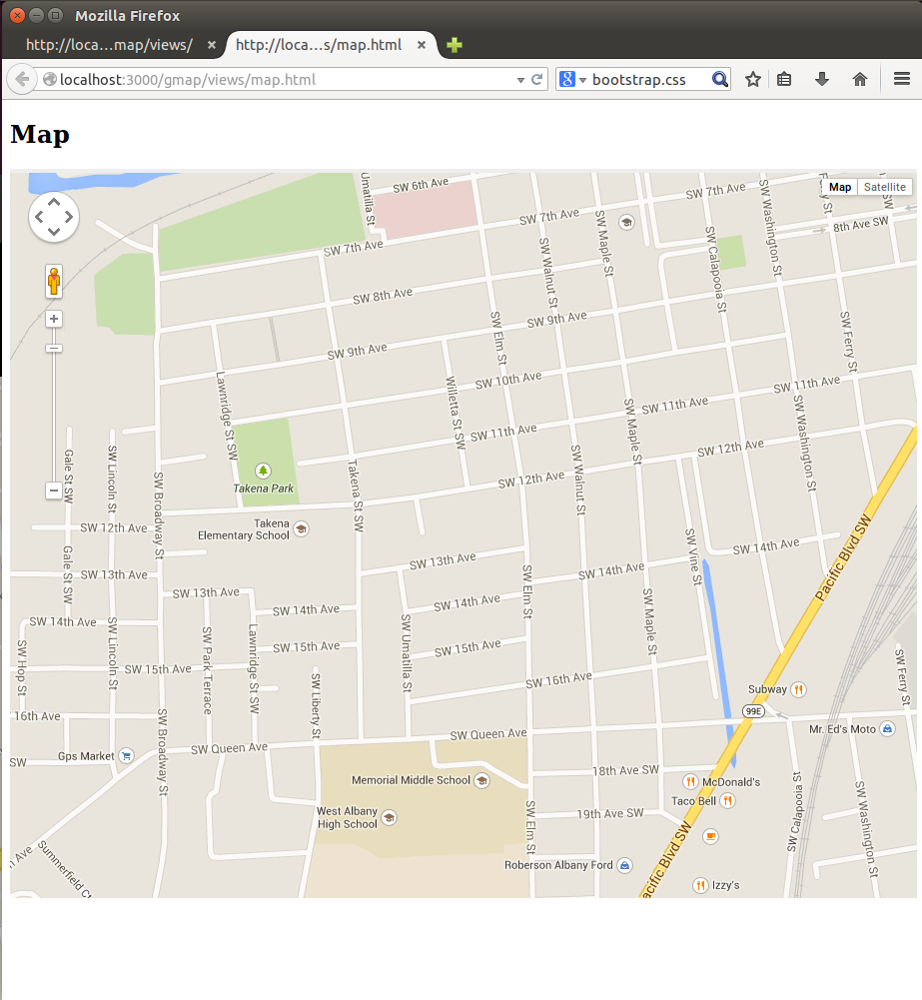
Huzzah! A map!
STEP 7
Create a new package from scratch.
So, installing addons is pretty easy. What about creating a new package from scratch?
I'd like to create a package that displays my name to the world. So, I'll need to create a folder, call it eric and add the /public, /server and app.js, mean.json, package.json and README.md directories and files. Copy the /server folder from the system folder. Copy the /public folder from the system folder as well. In the views folder delete everything and add only index.html as per the listing below.
app.js
'use strict';
/*
* Defining the Package
*/
var Module = require('meanio').Module,
favicon = require('serve-favicon');
var SystemPackage = new Module('eric');
/*
* All MEAN packages require registration
* Dependency injection is used to define required modules
*/
SystemPackage.register(function(app, auth, database) {
//We enable routing. By default the Package Object is passed to the routes
SystemPackage.routes(app, auth, database);
SystemPackage.aggregateAsset('css', 'common.css');
SystemPackage.angularDependencies(['ui.router', 'mean-factory-interceptor']);
// The middleware in config/express will run before this code
// Set views path, template engine and default layout
app.set('views', __dirname + '/eric/views');
// Setting the favicon and static folder
app.use(favicon(__dirname + '/public/assets/img/favicon.ico'));
// Adding robots and humans txt
app.useStatic(__dirname + '/public/assets/static');
return SystemPackage;
});
mean.json
{
"dependencies": {
}
}
package.json
{
"name": "eric",
"version": "0.0.1",
"description": "Eric is rad",
"author": {
"name": "Eric"
},
"mean": "0.4.x",
"engines": {
"node": "0.10.x",
"npm": "1.4.x"
},
"dependencies": {},
"license": "MIT"
}
README.md
README: eric
index.html
<section class="welcome container-fluid" data-ng-controller="IndexController">
<div class="col-md-12 first">
<p>ERIC WAS HERE!</p>
<p>MEAN STACK IS AWESOME</p>
</div>
</section>
Shutdown grunt if it is running and restart it grunt -f. Then browse to our new page.
http://localhost:3000/eric/views
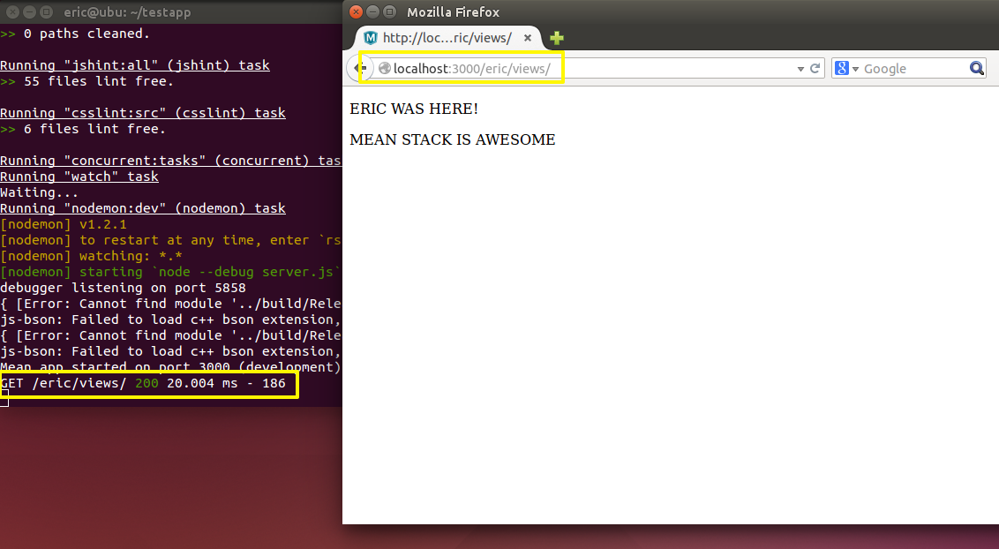
Success! The world will know my name!
conclusion
It is not in the stars to hold our destiny but in ourselves.
There you have it! You are now set up to develop web applications using the MEAN stack. Congratulations! Now you just need to browse the documentation to Node, Express and Angular to figure out how to do whatever it is you want to do! But really, things are pretty straight forward at this point. If you're familiar with these web tools then you already know all about the templating, database and http/http.port stuff. That is the appeal of the MEAN stack.
Now go create some web apps, this time with MEAN-ing!